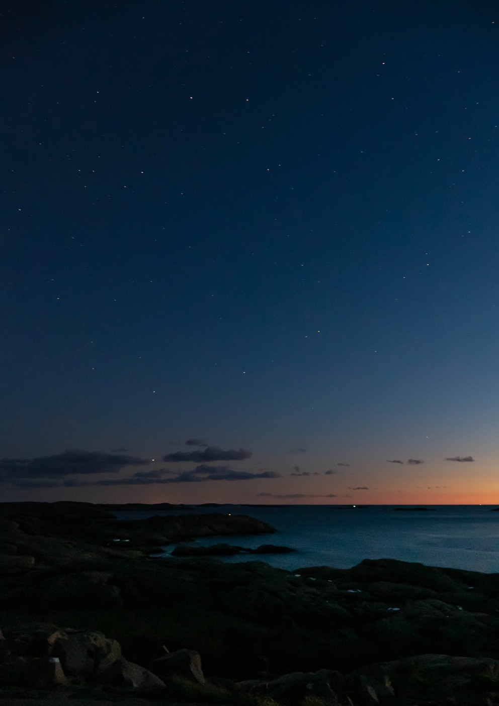
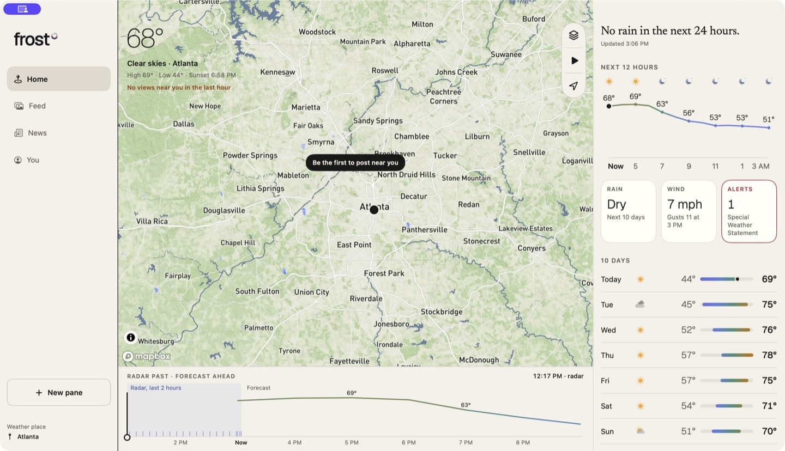

FICTIONAL SCENARIO · SAMPLE CONVERSATION
AAlex Illustrative participant
JJordan Illustrative participant

 Get launch updates ↗
Get launch updates ↗
A CLOSER CONNECTION TO THE WORLD OUTSIDE.
Forecasts and radar. Perspectives from the people there.
A closer connection to the world outside.
MEET THE APP
From the next hour to the next big weather story. Explore the forecast, get your bearings on the map, and see what people are sharing around you.
Hourly conditions, the days ahead, and the details that help you decide when to head outside.

Forecasts and radar, grounded in your place.
Nearby views, shared by the people there.
Weather stories and official updates, clearly distinguished.
THE FROST COMMUNITY
Follow the hurricane taking shape offshore. Compare snowfall as a blizzard rolls through. Connect the radar to perspectives on the ground. One conversation, across Frost and the web.
FICTIONAL SCENARIO · SAMPLE CONVERSATION
BE HERE FOR WHAT’S NEXT
Frost is taking shape. Ask about early access and hear when there’s something new to explore.
Opens your email app. Send your request to
sean@frostweather.com.
A FEW THINGS TO KNOW
Frost is in development. A public release date hasn’t been announced. Email us to ask about early access and launch updates.
The preview shows the current Mac development build. We’ll share confirmed platform availability and download links at launch.
That’s the plan: the same Frost account and the same conversations. The website currently contains illustrative scenarios; public posting and account access aren’t open yet.
No. App images are captured development screens, the hero weather is an animation, and Rooms are fictional scenarios. Use your local weather service for current forecasts and warnings.
This preview has no signup database or analytics scripts. The launch-updates button opens your email app; sending it shares your email address and message with Sean at Frost. You can request removal from launch updates by replying. GitHub Pages hosts this site and may process technical request information under its privacy statement.
GitHub privacy statement ↗